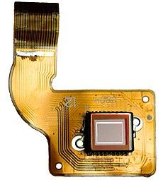

As the designing world has become compulsory and more sophisticated to meet the needs of the environment and peoples it requires simpler and quicker form of inserting data. From the use of keyboard and mouse to touchscreen IPADs and light pens can be taken as an example.
3D scanners capture every tiny detail of a material and transform it in to 3D model using building information modeling software. This helps the architect by saving time to reconstruct information of a prototype or model to make detail investigation and analysis. Not only for architects, but also for architecture teachers and students, it enables to make reliable examination on a model.
Visiting the job site to collect information is still crucial in the design process. Project site visits are conducted to take notes, measure and snap photos. Today, mobile cameras capture location and measurements to within centimeter accuracy. The information obtained on site is immediately available to anyone with a network-connected device.
The advancements in technology in terms of software sophistication, computer processing speed and data storage capacity is increasing. The architecture and engineering industry is leveraging these advancements as much as any industry. Design software allows for the creation of more precise plans with the ability to automate many repetitive actions. Bilateral increment of the capacity of Computer processing units-(CPUs) and Graphics cards with respect to system requirement of these softwares allowed the architect to make use of the softwares with full potential and better designing capabilities.
Most of the time we herd of engineers referring to virtual reality-(VR) which puts the user in artificially rendered environment either for aesthetic or research purpose. And soon architects will be able to fully construct 3D representations of their work and use VR to put their clients into the experience before the first brick is laid. They can use 3d modeling software to show how the design look like, but to actually put on a headset and drape your senses with sound and space will make the spaces and materials instantly relatable and understandable. Designers are making use of advancements in 3D printing and rapid prototyping to not only build better, more accurate design models, but to build full scale representations of their work. Currently simple structures or even an apartment is being built using 3D printing machineries